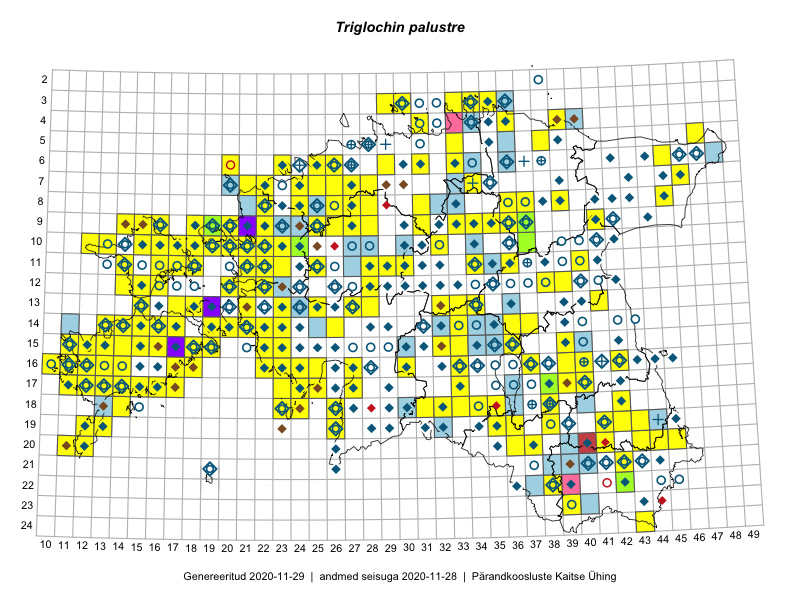

Triglochin palustre
Uuendatud: 2016-12-07
Kaardile koondatud taksonid: Triglochin palustre L.

Kaart põhineb 157 kirjel, neist vaatlusi 156 ja eksemplare 1. Taksonit on leitud 126 ruudust.
| Ruut | Vaatleja(d) | Vaatlusaeg | Kirje tüüp | Viide andmebaasikirjele |
|---|---|---|---|---|
| 12-28 | Tiit Hallikma, Toomas Kukk, Indrek Tammekänd | 2015-06-09 | ruut/ala | vaata PlutoFis |
| 16-40 | Thea Kull | 2015-07-07 | ruut/ala | vaata PlutoFis |
| 10-17 | Toomas Kukk, Eerik Leibak | 2015-08-12 | ruut/ala | vaata PlutoFis |
| 09-14 | Toomas Kukk, Eerik Leibak | 2015-08-10 | ruut/ala | vaata PlutoFis |
| 15-39 | Peedu Saar | 2015-07-15 | ruut/ala | vaata PlutoFis |
| 09-15 | Toomas Kukk, Eerik Leibak | 2015-08-11 | ruut/ala | vaata PlutoFis |
| 09-16 | Toomas Kukk, Eerik Leibak | 2015-08-11 | ruut/ala | vaata PlutoFis |
| 14-36 | Peedu Saar | 2015-08-04 | ruut/ala | vaata PlutoFis |
| 13-41 | Peedu Saar | 2015-08-11 | ruut/ala | vaata PlutoFis |
| 05-47 | Tiit Hallikma, Toomas Kukk | 2015-07-22 | ruut/ala | vaata PlutoFis |
| 07-46 | Tiit Hallikma, Toomas Kukk, Meeli Mesipuu | 2015-05-31 | ruut/ala | vaata PlutoFis |
| 10-15 | Thea Kull | 2015-06-15 | ruut/ala | vaata PlutoFis |
| 16-17 | Peedu Saar | 2015-09-07 | ruut/ala | vaata PlutoFis |
| 06-45 | Thea Kull, Eerik Leibak | 2015-07-20 | ruut/ala | vaata PlutoFis |
| 16-27 | Meeli Mesipuu | 2015-07-15 | ruut/ala | vaata PlutoFis |
| 10-23 | Toomas Kukk, Thea Kull | 2014-08-22 | ruut/ala | vaata PlutoFis |
| 14-22 | Toomas Kukk, Ott Luuk, Sander Laherand | 2014-08-24 | ruut/ala | vaata PlutoFis |
| 07-34 | Jana-Maria Habicht, Ester Valdvee | 2015-07-20 | ruut/ala | vaata PlutoFis |
| 09-34 | Jana-Maria Habicht, Ester Valdvee, Kirke Pilvik | 2015-07-25 | ruut/ala | vaata PlutoFis |
| 10-12 | Eeva-Maria Jeletsky, Tarmo Niitla | 2015-06-26 | ruut/ala | vaata PlutoFis |
| 12-22 | Ott Luuk, Peedu Saar | 2015-08-24 | ruut/ala | vaata PlutoFis |
| 12-15 | Eeva-Maria Jeletsky, Tarmo Niitla | 2015-06-25 | ruut/ala | vaata PlutoFis |
| 13-23 | Ott Luuk, Peedu Saar | 2014-08-29 | ruut/ala | vaata PlutoFis |
| 10-16 | Ott Luuk | 2014-08-28 | ruut/ala | vaata PlutoFis |
| 14-13 | Mari Reitalu, Triin Reitalu | 2015-08-14 | ruut/ala | vaata PlutoFis |
| 20-11 | Mari Reitalu, Triin Reitalu | 2014-08-15 | ruut/ala | vaata PlutoFis |
| 17-12 | Mari Reitalu | 2014-09-02 | ruut/ala | vaata PlutoFis |
| 17-12 | Mari Reitalu | 2015-09-10 | ruut/ala | vaata PlutoFis |
| 18-32 | Maria Abakumova, Tiit Hallikma | 2015-07-09 | ruut/ala | vaata PlutoFis |
| 17-12 | Mari Reitalu | 2015-08-13 | ruut/ala | vaata PlutoFis |
| 17-12 | Mari Reitalu | 2015-08-11 | ruut/ala | vaata PlutoFis |
| 14-19 | Meeli Mesipuu | 2015-06-20 | ruut/ala | vaata PlutoFis |
| 16-10 | Mari Reitalu, Oliver Parrest | 2015-08-04 | ruut/ala | vaata PlutoFis |
| 16-12 | Mari Reitalu, Triin Reitalu | 2015-08-18 | ruut/ala | vaata PlutoFis |
| 16-12 | Mari Reitalu | 2015-09-03 | ruut/ala | vaata PlutoFis |
| 17-13 | Mari Reitalu, Oliver Parrest | 2015-08-12 | ruut/ala | vaata PlutoFis |
| 14-13 | Mari Reitalu, Oliver Parrest | 2015-07-24 | ruut/ala | vaata PlutoFis |
| 14-13 | Mari Reitalu, Oliver Parrest | 2015-07-21 | ruut/ala | vaata PlutoFis |
| 13-18 | Meeli Mesipuu, Kadri Tali | 2015-06-25 | ruut/ala | vaata PlutoFis |
| 15-12 | Mari Reitalu, Oliver Parrest | 2015-07-21 | ruut/ala | vaata PlutoFis |
| 15-13 | Mari Reitalu, Oliver Parrest | 2015-07-24 | ruut/ala | vaata PlutoFis |
| 16-11 | Triin Reitalu, Mari Reitalu | 2015-08-09 | ruut/ala | vaata PlutoFis |
| 20-12 | Oliver Parrest | 2015-08-15 | ruut/ala | vaata PlutoFis |
| 16-22 | Maret Gerz, Leena Gerz | 2015-08-16 | ruut/ala | vaata PlutoFis |
| 17-11 | Mari Reitalu, Triin Reitalu | 2015-08-05 | ruut/ala | vaata PlutoFis |
| 16-12 | Mari Reitalu | 2015-07-08 | ruut/ala | vaata PlutoFis |
| 13-27 | Mari Metsoja, Jaak-Albert Metsoja | 2015-06-10 | ruut/ala | vaata PlutoFis |
| 12-22 | Thea Kull, Eerik Leibak | 2015-08-27 | ruut/ala | vaata PlutoFis |
| 11-18 | Meeli Mesipuu, Timo Luhamäe | 2015-05-26 | ruut/ala | vaata PlutoFis |
| 09-35 | Kadi Palmik, Helle Mäemets | 2015-07-21 | ruut/ala | vaata PlutoFis |
| 18-14 | Mari Reitalu, Triin Reitalu | 2014-07-17 | ruut/ala | vaata PlutoFis |
| 17-14 | Karin Kikas, Elle Rajandu | 2015-07-22 | ruut/ala | vaata PlutoFis |
| 15-36 | Helle Mäemets, Mare Leis | 2015-07-06 | ruut/ala | vaata PlutoFis |
| 16-40 | Maret Gerz, Ott Luuk | 2014-06-25 | ruut/ala | vaata PlutoFis |
| 09-28 | Aat Sarv | 2015-08-27 | ruut/ala | vaata PlutoFis |
| 09-22 | Ott Luuk, Peedu Saar, Maret Gerz | 2014-08-21 | ruut/ala | vaata PlutoFis |
| 03-30 | Mari Reitalu, Tõnu Ploompuu, Ott Luuk, Peedu Saar | 2014-06-01 | ruut/ala | vaata PlutoFis |
| 16-11 | Mari Reitalu, Triin Reitalu | 2015-08-09 | ruut/ala | vaata PlutoFis |
| 10-24 | Hanna-Eliisa Luts, Tõnu Ploompuu, Anna-Grete Rebane | 2015-07-19 | ruut/ala | vaata PlutoFis |
| 09-27 | Aat Sarv | 2015-07-16 | ruut/ala | vaata PlutoFis |
| 09-25 | Meelis Muuga, Tõnu Ploompuu | 2015-08-17 | ruut/ala | vaata PlutoFis |
| 05-38 | Toomas Kukk, Thea Kull | 2016-05-26 | ruut/ala | vaata PlutoFis |
| 07-28 | Meeli Mesipuu, Thea Kull | 2016-06-02 | ruut/ala | vaata PlutoFis |
| 19-26 | Peedu Saar, Thea Kull | 2016-06-07 | ruut/ala | vaata PlutoFis |
| 18-38 | Meeli Mesipuu, Timo Luhamäe | 2016-06-13 | ruut/ala | vaata PlutoFis |
| 21-42 | Sander Laherand, Ott Luuk | 2016-06-16 | ruut/ala | vaata PlutoFis |
| 19-43 | Vivika Väli, Ülo Väli | 2015-08-05 | ruut/ala | vaata PlutoFis |
| 09-25 | Thea Kull, Oliver Parrest | 2016-07-06 | ruut/ala | vaata PlutoFis |
| 09-18 | Toomas Kukk, Sander Laherand | 2016-07-07 | ruut/ala | vaata PlutoFis |
| 17-24 | Indrek Tammekänd | 2016-05-23 | ruut/ala | vaata PlutoFis |
| 14-23 | Thea Kull, Eerik Leibak | 2016-07-05 | ruut/ala | vaata PlutoFis |
| 13-28 | Thea Kull, Tiit Hallikma | 2016-07-08 | ruut/ala | vaata PlutoFis |
| 16-25 | Thea Kull, Helle Mäemets | 2016-07-04 | ruut/ala | vaata PlutoFis |
| 12-28 | Mari Reitalu, Eerik Leibak | 2016-07-06 | ruut/ala | vaata PlutoFis |
| 09-16 | Eeva-Maria Jeletsky, Tarmo Niitla | 2016-07-13 | ruut/ala | vaata PlutoFis |
| 10-18 | Eeva-Maria Jeletsky, Tarmo Niitla | 2016-07-14 | ruut/ala | vaata PlutoFis |
| 06-26 | Ulvi Selgis | 2016-07-16 | ruut/ala | vaata PlutoFis |
| 22-42 | Thea Kull, Peedu Saar | 2016-08-04 | ruut/ala | vaata PlutoFis |
| 14-23 | Erkki Otsman, Sergei Smirnov | 2016-06-22 | ruut/ala | vaata PlutoFis |
| 14-22 | Erkki Otsman, Sergei Smirnov | 2016-06-23 | ruut/ala | vaata PlutoFis |
| 18-43 | Thea Kull, Indrek Tammekänd | 2016-07-19 | ruut/ala | vaata PlutoFis |
| 08-36 | Ott Luuk, Kersti Tambets, Janika Sammasto, Ülle Jõgar, Sten Mander | 2016-08-11 | ruut/ala | vaata PlutoFis |
| 13-32 | Thea Kull, Raivo Kalle, Susanna Vain | 2016-07-21 | ruut/ala | vaata PlutoFis |
| 12-16 | Sander Laherand, Thea Kull, Nele Jõessar | 2016-08-11 | ruut/ala | vaata PlutoFis |
| 14-15 | Peedu Saar, Maret Gerz | 2016-08-11 | ruut/ala | vaata PlutoFis |
| 11-18 | Sander Laherand, Peedu Saar, Nele Jõessar | 2016-08-08 | ruut/ala | vaata PlutoFis |
| 11-23 | Aat Sarv, Maret Gerz | 2016-07-06 | ruut/ala | vaata PlutoFis |
| 11-14 | Peedu Saar, Thea Kull | 2016-08-09 | ruut/ala | vaata PlutoFis |
| 20-43 | Peedu Saar, Thea Kull | 2016-08-05 | ruut/ala | vaata PlutoFis |
| 15-14 | Maret Gerz, Peedu Saar | 2016-08-12 | ruut/ala | vaata PlutoFis |
| 20-36 | Thea Kull, Ott Luuk | 2016-08-23 | ruut/ala | vaata PlutoFis |
| 11-30 | Erkki Otsman, Sergei Smirnov | 2016-07-18 | ruut/ala | vaata PlutoFis |
| 16-42 | Kaire Lanno, Karin Kaljund | 2016-07-22 | ruut/ala | vaata PlutoFis |
| 18-24 | Karin Kaljund, Kaire Lanno, Indrek Melts | 2016-07-26 | ruut/ala | vaata PlutoFis |
| 11-16 | Toomas Kukk, Thea Kull | 2016-08-08 | ruut/ala | vaata PlutoFis |
| 10-15 | Toomas Kukk, Sander Laherand, Nele Jõessar | 2016-08-09 | ruut/ala | vaata PlutoFis |
| 12-15 | Toomas Kukk, Meeli Mesipuu | 2016-08-10 | ruut/ala | vaata PlutoFis |
| 12-14 | Toomas Kukk, Meeli Mesipuu | 2016-08-10 | ruut/ala | vaata PlutoFis |
| 17-17 | Toomas Kukk, Meeli Mesipuu | 2016-08-12 | ruut/ala | vaata PlutoFis |
| 10-22 | Sirje Azarov, Oliver Parrest | 2016-07-07 | ruut/ala | vaata PlutoFis |
| 11-22 | Sirje Azarov, Oliver Parrest | 2016-07-07 | ruut/ala | vaata PlutoFis |
| 05-38 | Thea Kull, Toomas Kukk | 2016-09-06 | ruut/ala | vaata PlutoFis |
| 07-22 | Mari Reitalu, Eerik Leibak | 2016-07-07 | ruut/ala | vaata PlutoFis |
| 08-37 | Mari Reitalu, Triin Reitalu | 2016-07-12 | ruut/ala | vaata PlutoFis |
| 09-37 | Mari Reitalu, Triin Reitalu | 2016-07-11 | ruut/ala | vaata PlutoFis |
| 06-29 | Sander Laherand, Toomas Kukk | 2016-08-29 | ruut/ala | vaata PlutoFis |
| 14-14 | Mari Reitalu, Sirje Azarov | 2016-07-26 | ruut/ala | vaata PlutoFis |
| 14-19 | Mari Reitalu, Sirje Azarov | 2016-08-18 | ruut/ala | vaata PlutoFis |
| 15-19 | Mari Reitalu, Triin Reitalu | 2016-08-14 | ruut/ala | vaata PlutoFis |
| 16-18 | Mari Reitalu, Sirje Azarov | 2016-08-08 | ruut/ala | vaata PlutoFis |
| 16-27 | Tiit Hallikma, Tõnu Ploompuu | 2016-06-20 | ruut/ala | vaata PlutoFis |
| 10-24 | Helle Mäemets, Tiina Elvisto | 2016-07-06 | ruut/ala | vaata PlutoFis |
| 18-24 | Peedu Saar, Ott Luuk | 2016-09-21 | ruut/ala | vaata PlutoFis |
| 20-11 | Meeli Mesipuu | 2016-09-25 | ruut/ala | vaata PlutoFis |
| 09-31 | Peedu Saar, Ott Luuk | 2016-09-07 | ruut/ala | vaata PlutoFis |
| 16-24 | Helle Mäemets, Thea Kull | 2016-07-04 | ruut/ala | vaata PlutoFis |
| 07-25 | Helle Mäemets, Tiina Elvisto | 2016-07-05 | ruut/ala | vaata PlutoFis |
| 16-39 | Kersti Püssa, Rein Kalamees | 2016-07-13 | ruut/ala | vaata PlutoFis |
| 13-17 | Peedu Saar, Ott Luuk | 2016-08-29 | ruut/ala | vaata PlutoFis |
| 17-25 | Tiit Hallikma, Tõnu Ploompuu | 2016-07-06 | ruut/ala | vaata PlutoFis |
| 16-17 | Peedu Saar, Ott Luuk | 2016-09-01 | ruut/ala | vaata PlutoFis |
| 18-23 | Ott Luuk, Peedu Saar | 2016-09-21 | ruut/ala | vaata PlutoFis |
| 10-19 | Ott Luuk, Meeli Mesipuu | 2016-09-15 | ruut/ala | vaata PlutoFis |
| 03-33 | Peedu Saar, Timo Luhamäe | 2016-07-26 | ruut/ala | vaata PlutoFis |
| 09-36 | Ott Luuk | 2016-08-11 | ruut/ala | vaata PlutoFis |
| 14-19 | Meeli Mesipuu | 2016-06-29 | ruut/ala | vaata PlutoFis |
| 13-25 | Peedu Saar, Timo Luhamäe, Johannes Kõdar | 2016-07-05 | ruut/ala | vaata PlutoFis |
| 19-12 | Ott Luuk, Peedu Saar | 2016-10-07 | ruut/ala | vaata PlutoFis |
| 14-16 | Ott Luuk, Peedu Saar | 2016-08-31 | ruut/ala | vaata PlutoFis |
| 10-20 | Peedu Saar, Timo Luhamäe | 2016-07-07 | ruut/ala | vaata PlutoFis |
| 03-29 | Kadi-Liis Kesler | 2015-07-20 | ruut/ala | vaata PlutoFis |
| 09-33 | Ott Luuk, Eerik Leibak | 2016-07-25 | ruut/ala | vaata PlutoFis |
| 03-30 | Kadi-Liis Kesler | 2015-07-20 | ruut/ala | vaata PlutoFis |
| 13-33 | Ott Luuk, Indrek Tammekänd | 2016-07-21 | ruut/ala | vaata PlutoFis |
| 14-33 | Ott Luuk, Indrek Tammekänd | 2016-07-21 | ruut/ala | vaata PlutoFis |
| 19-26 | Ott Luuk, Hannes Pehlak | 2016-07-18 | ruut/ala | vaata PlutoFis |
| 20-44 | Meeli Mesipuu | 2016-09-08 | ruut/ala | vaata PlutoFis |
| 09-19 | Meeli Mesipuu, Ott Luuk | 2016-09-16 | ruut/ala | vaata PlutoFis |
| 08-31 | Toivo Sepp, Peedu Saar | 2016-07-18 | ruut/ala | vaata PlutoFis |
| 18-26 | Meeli Mesipuu, Timo Luhamäe | 2016-07-18 | ruut/ala | vaata PlutoFis |
| 17-15 | Meeli Mesipuu, Toomas Kukk, Johannes Kõdar | 2016-08-11 | ruut/ala | vaata PlutoFis |
| 09-14 | Meeli Mesipuu, Maret Gerz | 2016-08-09 | ruut/ala | vaata PlutoFis |
| 18-26 | Ott Luuk, Peedu Saar | 2016-06-10 | ruut/ala | vaata PlutoFis |
| 19-41 | Ott Luuk, Sander Laherand, Susanna Vain | 2016-06-13 | ruut/ala | vaata PlutoFis |
| 03-35 | Ott Luuk, Sander Laherand, Nele Jõessar | 2016-07-26 | ruut/ala | vaata PlutoFis |
| 14-21 | Toomas Kukk | 2013-06-29 | ruut/ala | vaata PlutoFis |
| 14-37 | Meeli Mesipuu, Peedu Saar | 2014-08-14 | ruut/ala | vaata PlutoFis |
| 12-20 | Meeli Mesipuu, Maret Gerz | 2015-08-25 | ruut/ala | vaata PlutoFis |
| 06-20 | Jaak-Albert Metsoja, Mari Metsoja | 2016-06-30 | ruut/ala | vaata PlutoFis |
| 08-24 | Jaak-Albert Metsoja, Mari Metsoja | 2016-07-08 | ruut/ala | vaata PlutoFis |
| 07-26 | Jaak-Albert Metsoja, Mari Metsoja | 2016-07-04 | ruut/ala | vaata PlutoFis |
| 08-26 | Jaak-Albert Metsoja, Mari Metsoja | 2016-07-04 | ruut/ala | vaata PlutoFis |
| 16-30 | Hannes Pehlak, Thea Kull | 2016-07-20 | ruut/ala | vaata PlutoFis |
| 03-34 | Hannes Pehlak, Toomas Kukk | 2016-07-26 | ruut/ala | vaata PlutoFis |
| 15-33 | Jaak-Albert Metsoja, Mari Metsoja | 2016-07-22 | ruut/ala | vaata PlutoFis |
| 18-35 | Mari Metsoja, Peedu Saar | 2016-07-20 | ruut/ala | vaata PlutoFis |
| 10-24 | Peedu Saar | 2012-06-12 | eksemplar | vaata PlutoFis |